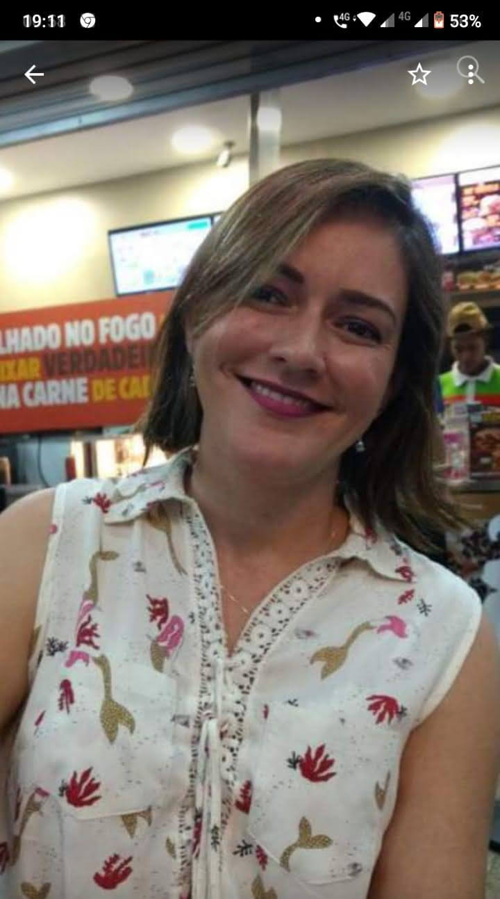

Enfermeira Especialista • COREN-SP 321742
Atendimento de enfermagem com foco em promoção da saúde, prevenção, acompanhamento clínico, tratamento de feridas, dor crônica, cuidados paliativos, saúde do idoso, ambulância, injetáveis, laudos, terapias complementares, saúde da família, consultoria e educação em saúde.
Enfermeira especialista com sólida trajetória em assistência, supervisão, gestão, educação em saúde, urgência, feridas, atenção primária, saúde pública, cuidados paliativos e acompanhamento integral do paciente.
Maria Cristina de Moraes é Enfermeira Especialista, registrada no COREN-SP 321742, com ampla formação e experiência em diferentes cenários da assistência, gestão e consultoria em saúde.
Sua atuação contempla o cuidado ao paciente e à família, o planejamento assistencial, o acompanhamento de condições agudas e crônicas, a educação em saúde, a orientação de cuidadores, o apoio técnico a serviços e a construção de condutas voltadas à segurança e qualidade de vida.
Com experiência em setores como UTI adulto/pediátrica, pronto atendimento, ambulatório, endoscopia, atendimento domiciliar, feridas/curativos e atenção primária, oferece um cuidado individualizado, ético e centrado na pessoa.

Orientação e acompanhamento online para todo o Brasil.
Avaliação, acompanhamento e cuidado especializado.
Conforto, qualidade de vida e apoio ao paciente e família.
Suporte técnico, assistencial e organizacional.
Atuação clínica, educativa, consultiva e gerencial, com foco no cuidado integral do paciente, da família, do cuidador e de instituições de saúde.
Atendimento remoto com orientação, avaliação inicial e acompanhamento em saúde.
Acompanhamento voltado ao controle de sintomas, autocuidado e qualidade de vida.
Avaliação e acompanhamento de feridas agudas e crônicas.
Cuidado integral para promoção do envelhecimento saudável e apoio ao cuidador.
Assistência humanizada para conforto, qualidade de vida e apoio familiar.
Atenção à promoção da saúde, prevenção de doenças e acompanhamento familiar.
Apoio à gestante, puérpera, recém-nascido e família.
Suporte técnico para serviços, equipes e processos assistenciais.
Atuação em remoção, suporte assistencial e atendimento em situações que demandem transporte com cuidado profissional.
Administração de medicamentos e terapias prescritas, com técnica, segurança e orientação ao paciente.
Produção de documentos técnicos de enfermagem, registros assistenciais e relatórios conforme necessidade do atendimento e da consultoria.
Abordagens integrativas e complementares com foco em bem-estar, cuidado ampliado e qualidade de vida.
Atendimento com visão integral da pessoa, considerando aspectos físicos, emocionais e de bem-estar no processo de cuidado.
Consultoria, capacitação, planejamento e apoio técnico em fluxos assistenciais.
Consultoria técnica, protocolos de segurança, educação continuada e gestão da assistência intensiva.
Orientação preventiva, controle de infecções e educação sobre doenças transmissíveis.
Experiência profissional e formação acadêmica apresentadas em tela para facilitar a visualização da trajetória de Maria Cristina de Moraes.
Atuação em saúde pública, acompanhamento assistencial, orientação em saúde, organização do cuidado e suporte às demandas da rede.
Supervisão de equipe, acompanhamento assistencial, organização de processos e apoio técnico ao cuidado hospitalar.
Atuação em atendimento de urgência e emergência, acolhimento, assistência e suporte em situações agudas.
Supervisão de equipe, gestão do cuidado, organização do atendimento e suporte à assistência em unidade de pronto atendimento.
Responsabilidade técnica, organização assistencial, acompanhamento de rotinas e suporte à qualidade do serviço.
Assistência direta ao paciente, acompanhamento clínico, procedimentos e suporte em demandas de urgência.
Atuação na docência, apoio à formação de profissionais, orientação de conteúdos e educação em saúde.
Atuação em cuidado intensivo, monitoramento, planejamento assistencial e suporte ao paciente crítico.
Formação voltada ao cuidado paliativo, vigilância em saúde e qualificação técnica para atuação ampliada na assistência e na gestão.
Formação voltada ao cuidado da gestante, puérpera, recém-nascido e acompanhamento familiar.
Qualificação voltada à infectologia, práticas complementares e promoção da saúde no contexto ocupacional e assistencial.
Formação em áreas periciais, gestão intensiva, fundamentos legais aplicados à saúde e assistência ao paciente crítico.
Qualificação específica em feridas, cicatrização, cuidado dermatológico e fundamentos de enfermagem forense.
Formação multidisciplinar em assistência, urgência, envelhecimento, gestão hospitalar, saúde pública e desenvolvimento de equipes.
Formação direcionada à docência, educação profissional e ensino em saúde.
Graduação em Enfermagem, base da atuação assistencial, educativa, gerencial e consultiva na área da saúde.
Formação técnica voltada ao cuidado e assistência de enfermagem.
Registro acadêmico conforme currículo apresentado.
Formação ampla e multidisciplinar, com foco em assistência, gestão, urgência, saúde pública, cuidados paliativos, dermatologia, infectologia, saúde da família e muito mais.
Atendimento online com escuta qualificada, orientação individualizada e suporte em saúde para pacientes, familiares e cuidadores.
Atendimento para dúvidas, sintomas, rotina de cuidados e acompanhamento em saúde.
Monitoramento de condições de saúde e apoio no autocuidado contínuo.
Organização da assistência de acordo com a necessidade do paciente e da família.
Orientações práticas, seguras e baseadas em evidências para o dia a dia.
Atendimento individualizado para pacientes, familiares, cuidadores e instituições, com foco em qualidade de vida, segurança, educação em saúde, assistência especializada e cuidado integral.
Entrar em contatoValores de referência para atendimentos de enfermagem. Os preços poderão variar conforme a complexidade do caso, materiais utilizados e local do atendimento.
| Serviço | Valor |
|---|---|
| Consulta de Enfermagem | R$ 180–300 |
| Consulta Domiciliar | R$ 250–450 |
| Avaliação Clínica | R$ 250–400 |
| Serviço | Valor |
|---|---|
| Aplicação IM | R$ 60–90 |
| Aplicação SC | R$ 50–80 |
| Aplicação EV | R$ 120–200 |
| Soroterapia | R$ 250–600 |
| Antibioticoterapia EV | R$ 180–350 |
| Serviço | Valor |
|---|---|
| Curativo Simples | R$ 120–180 |
| Curativo Médio | R$ 180–300 |
| Curativo Complexo | R$ 350–800 |
| Bota de Unna | R$ 280–450 |
| Laserterapia | R$ 150–350 |
| Desbridamento Conservador | R$ 350–800 |
| Serviço | Valor |
|---|---|
| Ozonioterapia* | R$ 180–450 |
| Auriculoterapia | R$ 120–180 |
| Terapia Holística | R$ 180–350 |
| Serviço | Valor |
|---|---|
| Consulta em Amamentação | R$ 250–450 |
| Consulta Neonatal | R$ 250–450 |
| Serviço | Valor |
|---|---|
| Cuidados Paliativos | R$ 300–600 |
| Atendimento Oncológico | R$ 300–600 |
| Gerenciamento de Casos | R$ 500–1.500/mês |
| Serviço | Valor |
|---|---|
| Plantão 6 horas | R$ 500–800 |
| Plantão 12 horas | R$ 900–1.500 |
| Plantão 24 horas | R$ 1.800–3.500 |
| Serviço de Ambulância | Sob orçamento |
| Serviço | Valor |
|---|---|
| Parecer Técnico | R$ 1.000–2.500 |
| Laudo Técnico | R$ 1.500–4.000 |
| Assistência Técnica | R$ 2.500–8.000 |
| Perícia Judicial | R$ 4.000–15.000 |
| Perícia Extrajudicial | R$ 3.000–10.000 |
| Análise de Prontuário | R$ 800–2.000 |
| Hora Técnica | R$ 350–700/hora |
Agende um atendimento, solicite informações ou entre em contato para consultoria em saúde.